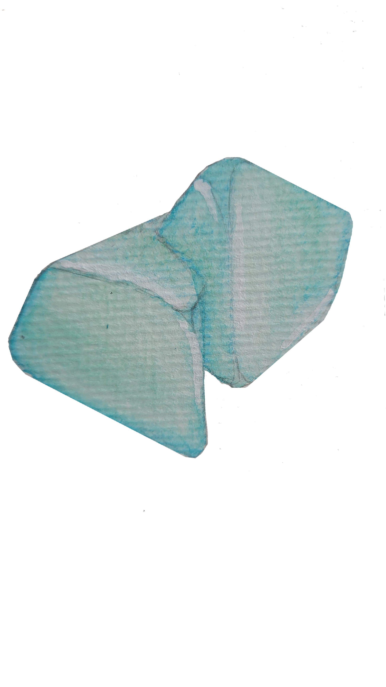

Estudo sobre a relação dos siguinos com suas respectiva pedra.
Cada signo possui mais de uma pedra que o simboliza, dependendo do estado de cada um seu mapa astral entre outros fatores que podem levar uma pessoa a ser representada por características de pedras variadas. Porém cada signo possui uma maior “aproximação” com algumas pedras.
Link